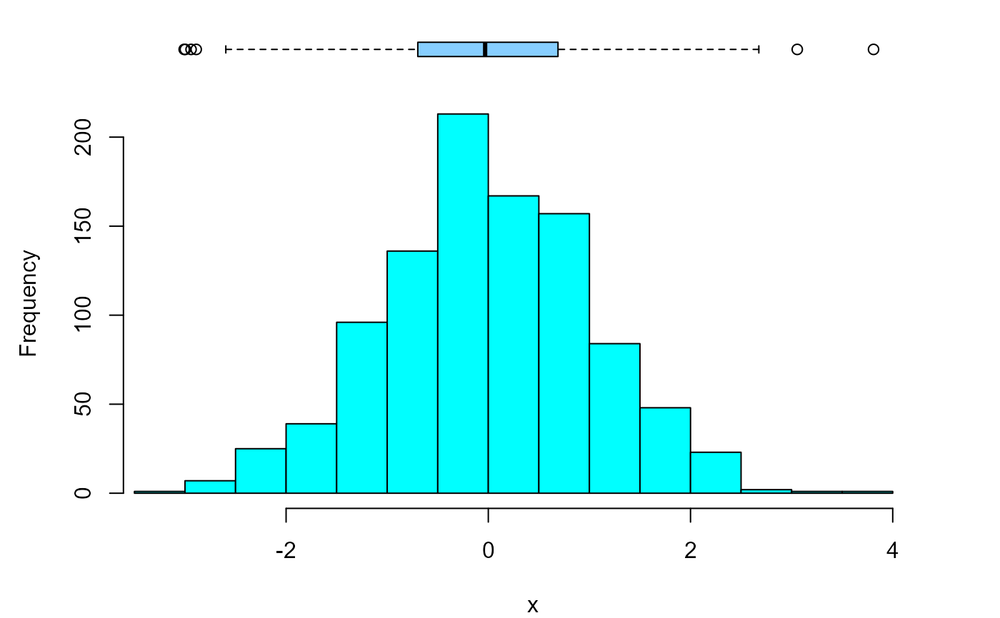
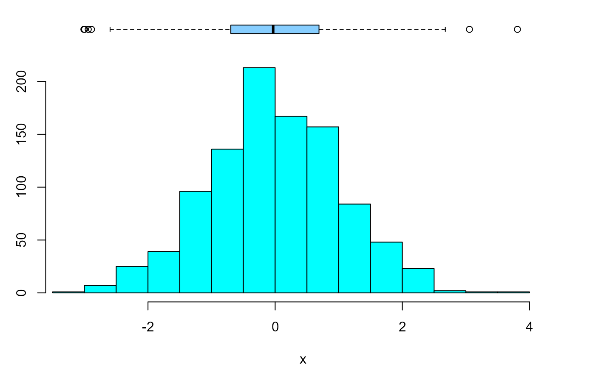
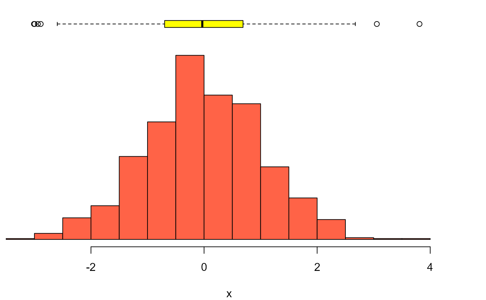
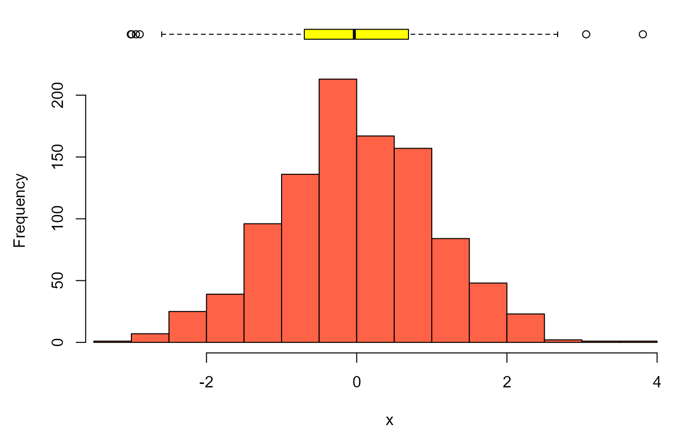
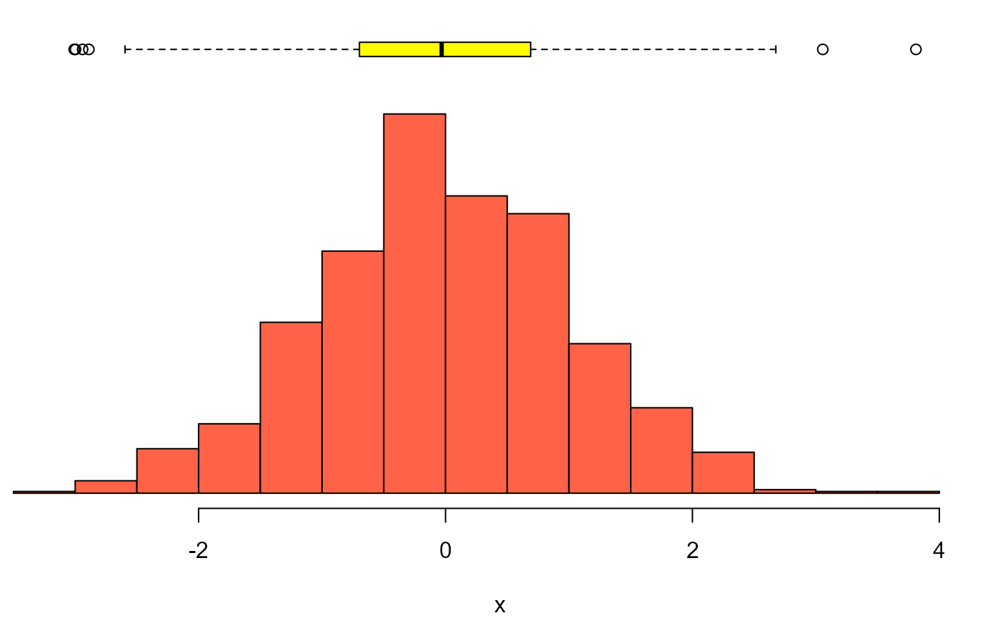

Histograma com boxplot
histobox.RdDesenha um histograma com boxplot integrado ao mesmo gráfico
Usage
histobox(
x,
limites = NULL,
col.h = "cyan",
col.bx = "skyblue1",
maresq = 4.5,
mardir = 2.1,
...
)Exemplos
varnum <- rnorm(1000)
histobox(varnum)

histobox(varnum, ylab = "Frequência")
histobox(varnum, maresq = 2.8)

# Se a margem esquerda for zero, o eixo y é removido:
histobox(varnum, col.h = "tomato", col.bx = "yellow", maresq = 0)

histobox(varnum, col.h = "tomato", col.bx = "yellow", mardir = 0)

histobox(varnum, col.h = "tomato", col.bx = "yellow", maresq = 0, mardir = 0)
